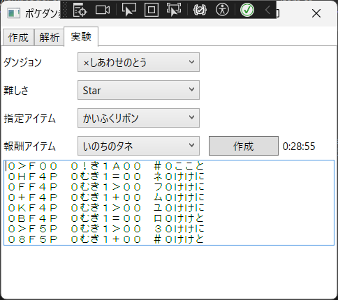
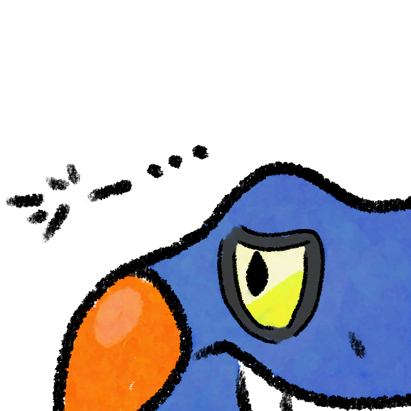

| パスワード |
|---|
ポケダン赤青の捏造メール作成ツールです。
| パスワード |
|---|
パスワードの表はクリックで選択することでどれを入力しているかわかりやすくできます。
作成ボタンはエンターキーで押せて、パスワードの表は上下矢印キーで選択状態を移動できるので、繰り返す場合マウス要らずで操作できます。
詳しくはこのブログ記事を読んでください。

※この記事にはポケモンダンジョンの正規の遊び方ではない内容が含まれています。読むかどうかは自己責任でお願いします。
tarakodragon.hatenablog.com当ページは個人が制作した非公式のファンサイトです。株式会社ポケモンおよび関連企業とは一切関係ありません。
当ページのツールは個人が制作したものであり、計算結果の正確性を保証するものではありません。計算式やデータ等に誤りが含まれている場合があります。ツールの利用および利用結果の判断は、すべて利用者ご自身の責任で行ってください。当ページのツールを利用したこと、または利用できなかったことによって生じたいかなる損害についても、制作者は責任を負いかねます。
当ページは予告なく掲載内容の変更または公開の停止を行う場合があります。あらかじめご了承ください。
パスワードの生成規則が詳しく載っています。
メールパス解析 - ポケモン不思議のダンジョン 青の救助隊/赤の救助隊 Wiki*プログラミングでわからないことを調べました。
ChatGPT - チャットGPT
昔のポケモン対戦考察を主にやっていきます。
tarakodragon.hatenablog.comX初心者で使い方わかってません、反応遅いです、優しくしてね
ゲーム（ポケモン4thGSや周辺世代、マイクラ、ポケポケ、ハートピアなど）、アニメ
2026/10/17 ver1.0.0 公開